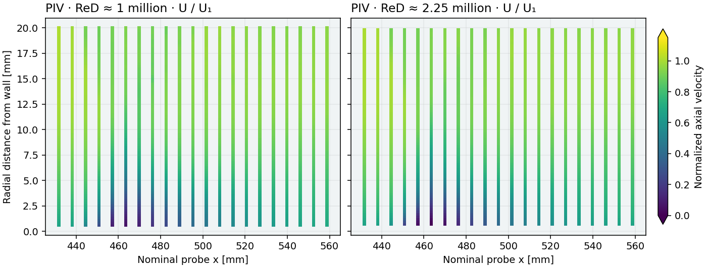

Mach 3 · NASA PIV measurements
Two HMVE experiments
NASA measured a second 16° cone configuration at two nominal diameter Reynolds numbers. Compare velocity means across matched probe stations.

Compare two experimental bands
Axial velocity averaged over the selected radial band, normalized by the published U₁. Both series are measured PIV.
What you are seeing
The boundary layer meets the interaction at different nominal diameter Reynolds numbers, about 1.0 and 2.25 million. The archive supplies two PIV series at Mach 3.003 and 2.994 with matching nominal probe locations.
At nominal x = 450.85 mm in the 1.5–5 mm radial band, the published normalized velocity means are 0.60229 and 0.63663, or −0.03433 for lower minus higher ReD.
Evidence limits
The archive shows a difference between two experiments. Slight Mach differences, uncertain shock registration and missing paired uncertainty prohibit attributing the full change to Reynolds number alone. No matched CFD or experimental Cf curve is included.
Sources and replay
NASA/TM–20250008885 and attachment · Replay table
Run python -m analysis run hmve after downloading pinned inputs. Full replay commands · Conditions and units